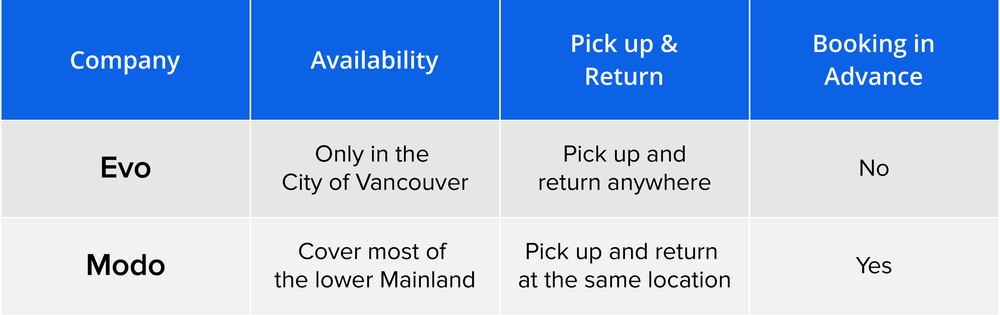
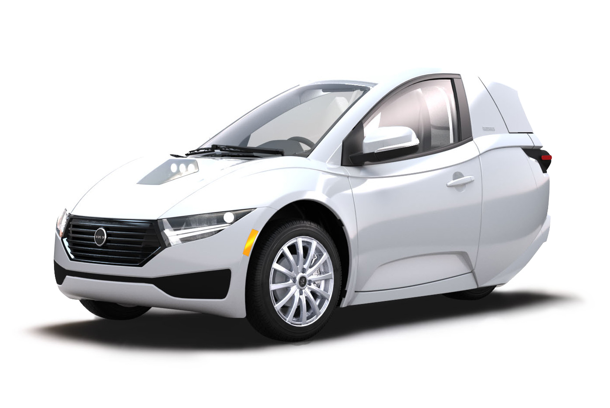
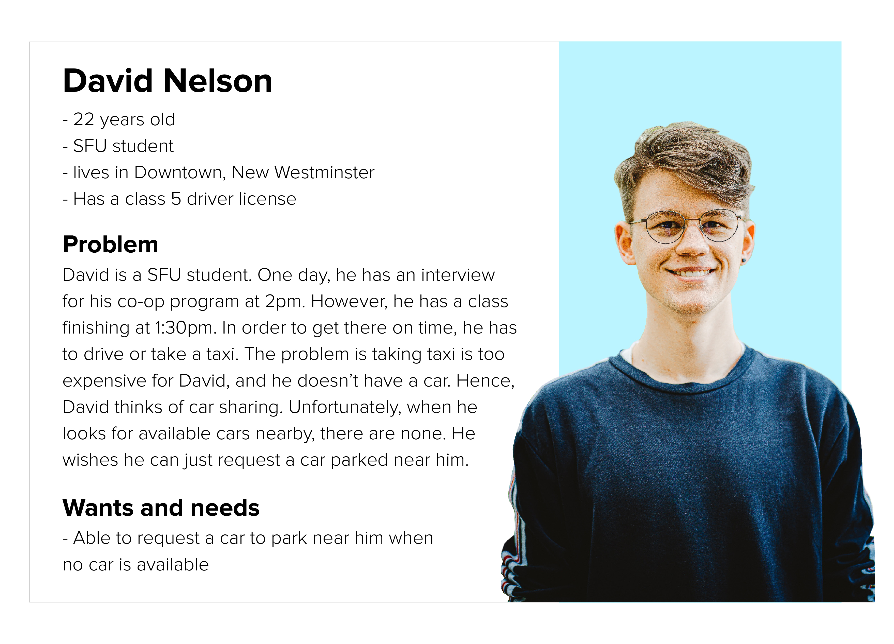
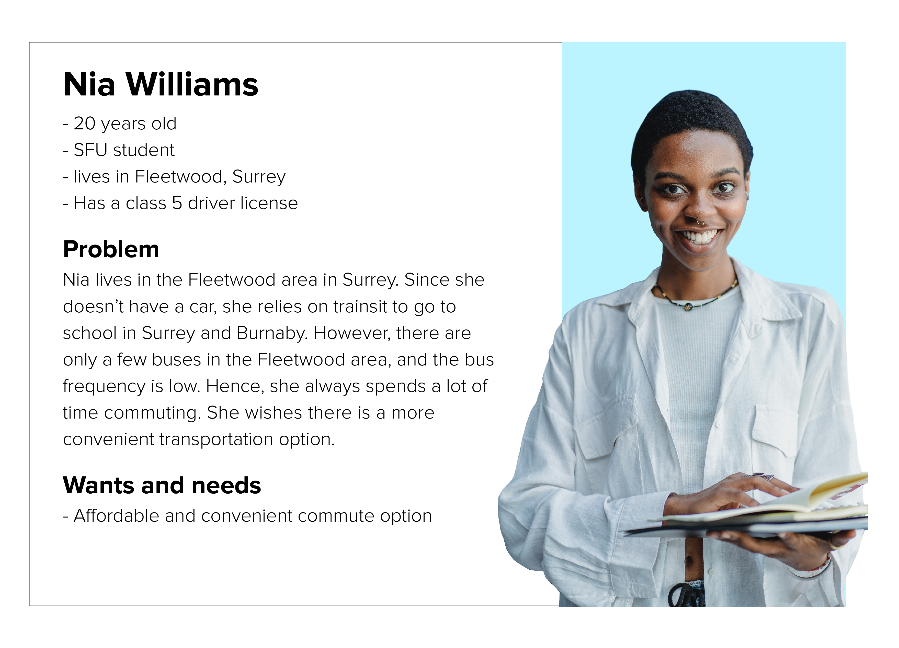
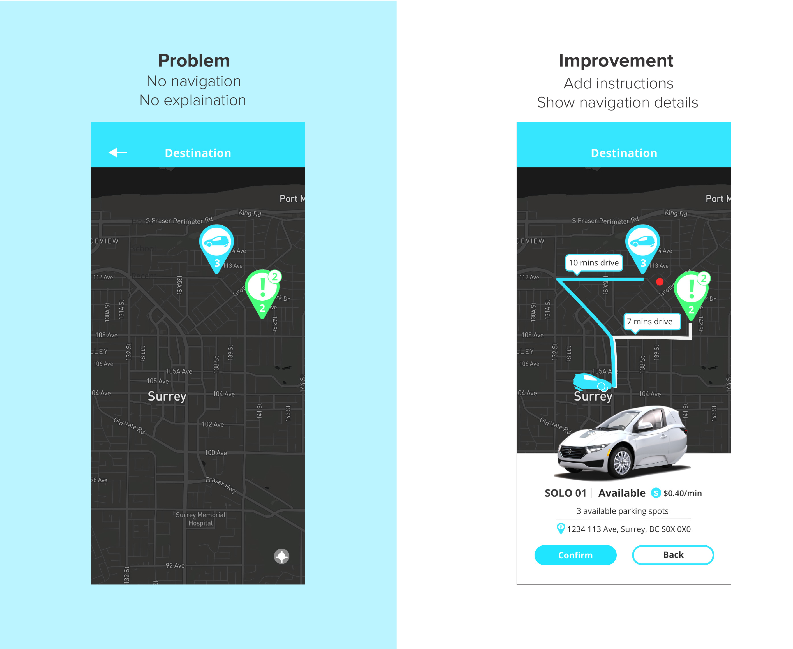
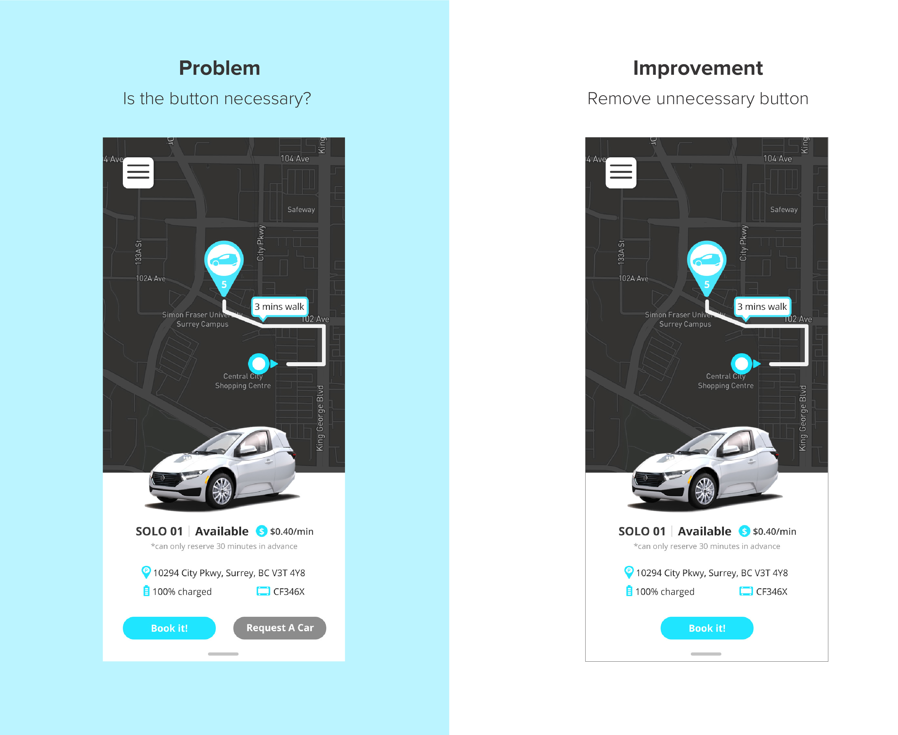
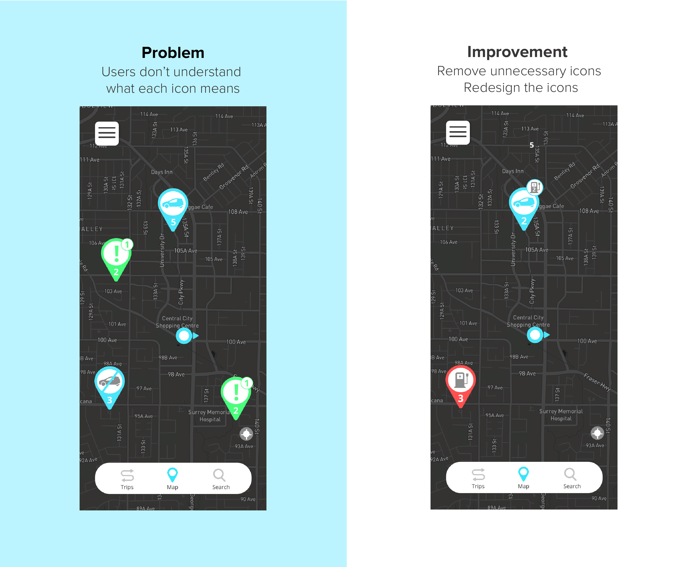

UniGo Car Sharing Mobile App
Project Background
UniGo is a car sharing mobile app that gives university students in the Vancouver area an exclusive car sharing service with unique, single-seater electric cars. Students can request other users to bring a car to them, and those who accept will get a discount for their journey.
I teamed up with Mahima Agrawal and Wesley Liu in this project for IAT 334 class. I have contributed to the research, market analysis, user testing, and UI design. Finally, we delivered the app prototype and a promotion website for this project.
- Duration:
5 weeks, 2020 Fall - Contribution:
UX research, User testing UI visual design, Website - Tools:
Figma, Adobe Photoshop Adobe Illustrator - Deliverable:
Prototype
Click to see the prototype.
Identifying The Problem
During the brainstorming session, we thought of the common problems we had as students. As students ourselves, we drew from our personal experiences and the experiences of our friends. Turns out, public transit from universities in Vancouver works, but is not great. In light of this, we dug around to see what kinds of alternatives we could offer for students.
Digging more, we found:
- 01. A study showed that having a car-sharing service on-campus improved their quality of life. Also, it can help students to save money at the same time.
- 02. Studies show that many young people in Vancouver are getting their licenses, but not able to own a car themselves
- 03. Many students are not allowed to use their parents’ vehicle to get to and from school, either. Combining the findings, we found the problem that University students in Vancouver don’t have flexible and convenient commute options.
The Research
We started off our research from market research on the existing car-sharing app on the market, especially the ones in Vancouver. I compared the two car-sharing apps in Vancouver.
From the market research, I learned that there is a lack of flexibility in the current car-sharing app. They are either regional locked or have to pick up and return at the same location. Besides the lack of flexibility, the expensive price is another reason that stops students from using car-sharing services.
The Challenge
From our research, we found we faced two challenges:
- 01. Since car-sharing apps have existed, how can we make our car sharing app different from others and also meet users’ needs?
- 02.How can we make car sharing more affordable for users?
The Approach
With the challenges in mind, we did more research. We found a perfect car for our car-sharing app.
The SOLO is a single-seater electric car designed specifically for travel in the city. It is small, affordable, and manageable, making it the perfect vehicle for students to get around! With this, more SOLOs can be scattered across the lower mainland, allowing more people to have access to it no matter where they live.
Also, I came up with a request car feature that can help users to save the cost after conducting research on other car sharing apps on the market. The request feature allows users to request cars if there is no car available in the users’ nearby location. Other users who drive cars can accept the requests when they book the car and select their final destination. After accepting the request, they will bring the cars to where it is needed. The driver users who accept the requests can get a discount on their rides.
Target User
- University and college students in Vancouver
- Ages around 18 to 30 years old
Let's meet the personas
 The Goals and Features
With the user in mind, we defined our app’s goals to help users to solve the problems:
- Providing single-person electric cars to offer users an affordable and convenient commute option
- Having a request feature helps users when no car is available nearby and also to help them to save some money
Here are the features:
- 01. Book a Car - Students can book a car from charging stations that are nearby.
- 02. Request a Car - When there is no car available nearby, students can send a car request to ask someone to bring the car to them.
- 03. Accept a Car Request - After booking a car, students will be able to see the stations that have car requests. If they accept a request, they will get a discount on their trip.
User Testing
After the first version prototype, we did user testing with 4 users remotely. I was responsible for 2 of them.
The interviewees are all university students aged from 21 to 27 because our target users are college students. Also, they come from various backgrounds and different experience levels of using car-sharing apps. So we can receive feedback from different perspectives. Here are the problems we found:
  Beside these problems, I found the color contrast with white background is low, so I decided to change the main blue color to a darker blue #0C62E4.
Final Design
Click to see the prototype.
Reflection
Overall, our app received positive feedback from TA and professor. During the process, I gained a deeper understanding of the importance of making the app unique. Also, making the design simpler is always better than making it complex. Working in a team, I have learned clear communication and aligning with the team’s goal in the early stage is very important for collaboration. Since we didn't have time to do another user testing after the design improvements, I wish I can do the user testing on the later version.